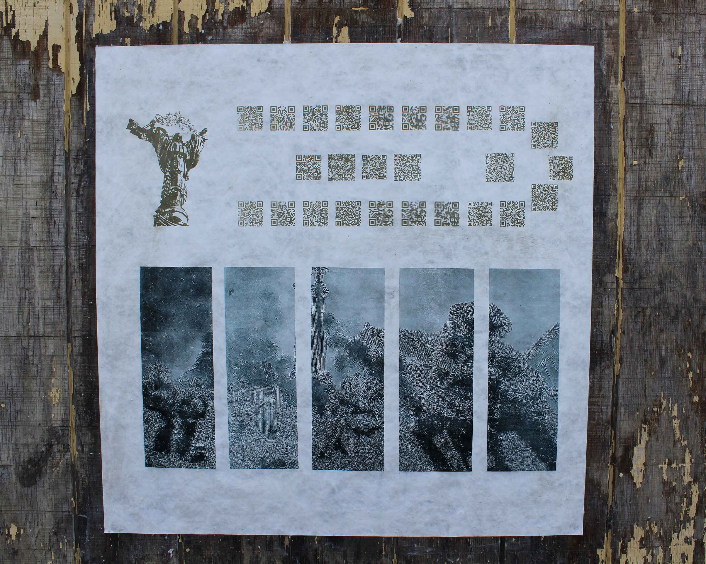
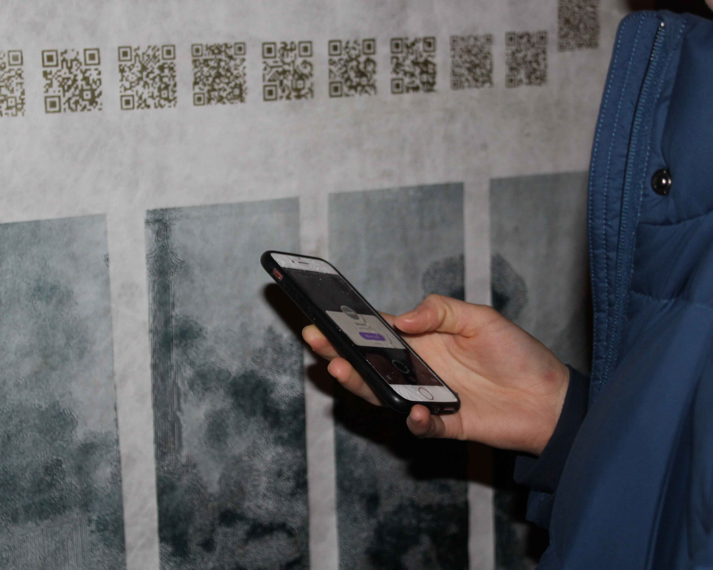
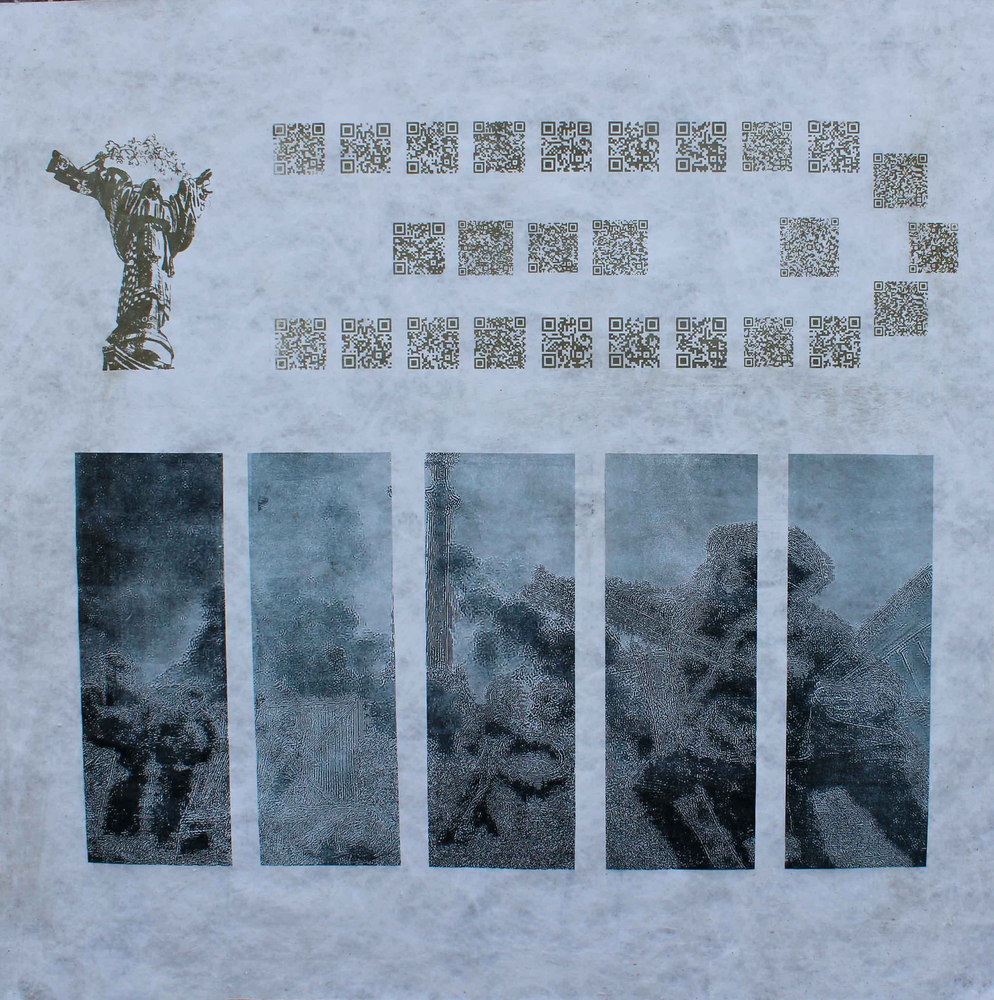
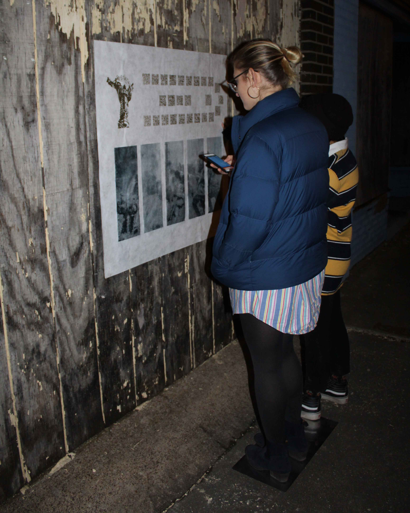

Euromaidan Print
12.2018
Silkscreen and lithography on Tyvek
36" x 36"
A print about the Ukrainian Revolution and the protests that took place in Maidan Nezalezhnosti in Kiev from November 21, 2013 – February 23, 2014. All QR codes featured on the print are scannable and link to news articles and websites relating to the Euromaidan protests, and so the viewer must interact with the piece in order to fully grasp its meaning. Additionally, the original photographs sourced in the print have been distorted and edited. This is both meant to parallel the distortion of information about the protests to American audiences, and to further reinforce the need to interact with the piece in order to understand its meaning. Originally, an etching plate which doubled as a mirror was placed on the ground in front of the print. It is wheat pasted on 1818 State Street in Granite City, IL, so that it is easily accessible by the American public.





Next→